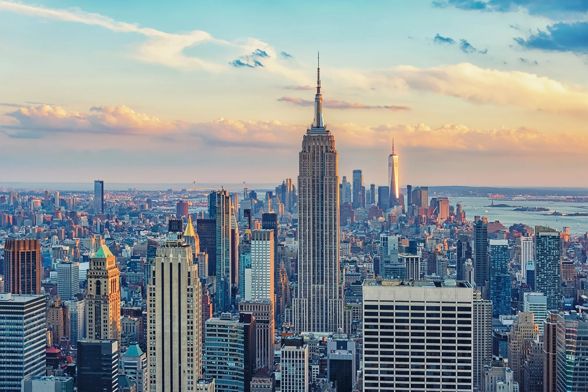
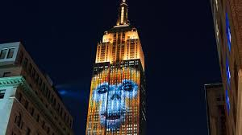
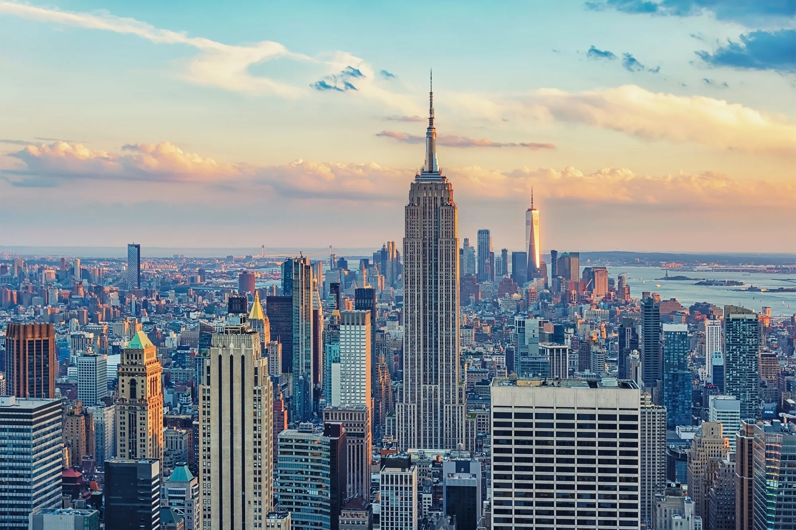
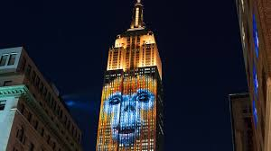

New York — AQSHning shimoli-sharqiy qismida joylashgan muhim shtatlardan
biri. U 1788-yil 26-iyunda AQSHga 11-shtat sifatida qo‘shilgan. Shtat
ko‘pincha New York City bilan chalkashadi, ammo New York City — bu
shtatdagi eng yirik shahar, shtatning o‘zi esa undan ancha katta va
xilma-xil.
Geografik joylashuvi:
Shimolda: Kanada (Ontario va Quebec provinsiyalari) Sharqda: Vermont,
Massachusetts, Connecticut Janubda: New Jersey va Pennsylvania G‘arbda:
Erie's ko‘li va Niagara sharsharasi orqali Kanada bilan chegaradosh
Shtatda ko‘plab tog‘li hududlar (Adirondack va Catskill tog‘lari), ko‘llar
va daryolar mavjud.
Iqtisodiyoti:
New York shtati iqtisodiyotining asosi — moliyaviy xizmatlar, turizm,
sug‘urta, savdo, tibbiyot, ilm-fan va texnologiyalar. New York City —
dunyoning moliyaviy poytaxti sanaladi (Wall Street, New York Stock
Exchange). Qishloq xo‘jaligi: mevalar (olma, uzum), sut mahsulotlari,
sabzavotlar yetishtiriladi. Shtatda ko‘plab universitetlar, ilmiy
markazlar va farmatsevtika kompaniyalari mavjud. Diqqatga sazovor joylari:
New York City:
Statue of Liberty (Erkinlik haykali) Central Park Empire State Building
Broadway teatrlar tumani Times Square Niagara Falls (Niagara sharsharasi)
— AQSH va Kanada o‘rtasidagi mashhur sharshara Adirondack Mountains — dam
olish, yurish, tabiat parklari Finger Lakes — ko‘llar mintaqasi,
uzumzorlar va dam olish joylari bilan mashhur Albany — shtat poytaxti,
tarixiy binolar va hukumat markazi
Madaniyat:
New York madaniy jihatdan juda boy: san’at, kino, moda, musiqa, adabiyot
va ijodiy sanoat rivojlangan. New York City dunyo madaniyatining
markazlaridan biri: ko‘plab teatrlar, muzeylar, galereyalar mavjud.
Immigrantlar ko‘pligi sababli, bu yerda jahon xalqlari madaniyati
aralashgan.
 


